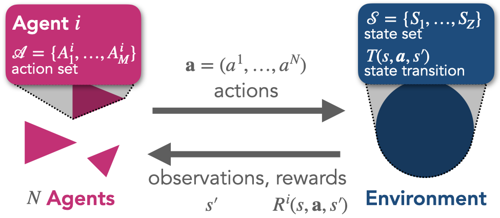
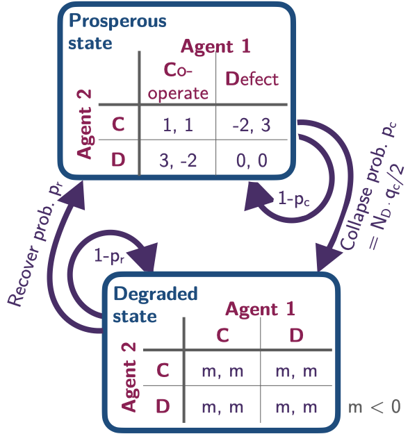

from pyCRLD.Environments.EcologicalPublicGood import EcologicalPublicGood as EPG
env = EPG(N=2, f=1.2, c=5, m=-5, qc=0.2, qr=0.01)3 Framework
Multi-agent environment interface (MAEi)

The basis for the learning dynamics is the multi-agent environment interface (MAEi) (Figure 3.1), which itself is based in its most basic form on the formal framework of stochastic games, also known as Markov games (Littman, 1994), which consist of the elements \(\langle N, \mathcal S, \boldsymbol{\mathcal A}, T, \boldsymbol{R} \rangle\).
In an MAEi, \(N \in \mathbb N\) agents reside in an environment of \(Z \in \mathbb N\) states \(\mathcal S=(S_1, \dots, S_Z)\). In each state \(s\), each agent \(i \in \{1,\dots, N\}\) has a maximum of \(M \in \mathbb N\) available actions \(\mathcal A^i = (A^i_1,\dots,A^i_M)\) to choose from. \(\boldsymbol{\mathcal A} = \bigotimes_i \mathcal A^i\) is the joint-action set where \(\bigotimes_i\) denotes the cartesian product over the sets indexed by \(i\). Agents choose their actions simultaneously. A joint action is denoted by \(\boldsymbol a = (a^1, \dots, a^N) \in \boldsymbol{\mathcal A}\). With \(\boldsymbol a^{-i} = (a^1,\dots,\) \(a^{i-1},\) \(a^{i+1},\) \(\dots,\) \(a^N)\) we denote the joint action except agent \(i\)’s, and we write the joint action in which agent \(i\) chooses \(a^i\) and all other agents choose \(\boldsymbol a^{-i}\) as \(a^i\boldsymbol a^{-i}\). We chose an equal number of actions for all states and agents out of notational convenience.
The transition function \(T: \mathcal S \times \boldsymbol{\mathcal A} \times \mathcal S \rightarrow [0, 1]\) determines the probabilistic state change. \(T(s, \boldsymbol a, s')\) is the transition probability from current state \(s\) to next state \(s'\) under joint action \(\boldsymbol a\). Throughout this work, we restrict ourselves to ergodic environments without absorbing states.
The reward function \(\boldsymbol R: \mathcal S \times \boldsymbol{\mathcal A} \times \mathcal S \rightarrow \mathbb{R}^N\) maps the triple of current state \(s\), joint action \(\boldsymbol a\) and next state \(s'\) to an immediate reward scalar for each agent. \(R^i(s,\boldsymbol a,s')\) is the reward agent \(i\) receives. Note that the reward function is often defined as depending only on the current state and joint action, \(R^i(s, \boldsymbol a)\). Our formulation maps onto this variant by averaging out the transition probabilities towards the next state according to \(R^i(s, \boldsymbol a) = \sum_{s'} T(s, \boldsymbol a, s') R^i(s, \boldsymbol a, s')\).
In principle, agents could condition their probabilities of choosing action on the entire history of past play. However, doing so is not only cognitively demanding. It also requires that agents observe all other agents’ actions. Therefore, we focus our analysis on simple, so-called Markov strategies, with which agents choose their actions based only on the current state: \(X^i : \mathcal S^i \times \mathcal A^i \rightarrow [0,1]\). \(X^i(s, a^i)\) is the probability that agent \(i\) chooses action \(a^i\) given the environment is in state \(s\). We denote the joint strategy by \(\boldsymbol X = \boldsymbol X(s, \boldsymbol a) = \bigotimes_i X^i(s, a^i) : {\mathcal S} \times \mathbf{\mathcal A} \rightarrow [0,1]^N\).
Ecological Tipping Environment
We illustrate an application of the multi-agent environment interface by specifying a concrete environment that allows studying the prospects of collective action under environmental tipping elements (Barfuss et al., 2020).

It is available in the Python package via:
The environmental state set consists of two states, a prosperous and a degraded one, \(\mathcal S = \{\mathsf g, \mathsf p\}\).
env.Sset['g', 'p']In each state \(s \in \mathcal S\), each agent \(i \in \{1, \dots, N\}\) can choose from their action set between either cooperation or defection, \(\mathcal A^i=\{\mathsf c, \mathsf d\}\).
env.Aset[['c', 'd'], ['c', 'd']]We denote the number of cooperating (defecting) agents by \(N_{\mathsf c}\) (\(N_{\mathsf d} = N - N_{\mathsf c}\)).
A collapse from the prosperous state to the degraded state occurs with transition probability, \[ T(\mathsf p, \boldsymbol a, \mathsf g) = \frac{N_{\mathsf d}}{N} q_{c}, \] with \(q_c \in [0, 1]\) being the collapse leverage parameter, indicating how much impact a defecting agent exerts on the environment. Thus, the environment remains within the prosperous state with probability, \(T(\mathsf p, \boldsymbol a, \mathsf p) = 1 - T(\mathsf p, \boldsymbol a, \mathsf g)\).
In the degraded state, we set the recovery to occur with probability, \[ T(\mathsf g, \boldsymbol a, \mathsf p) = q_{r}, \] independent of the agents’ actions. The parameter \(q_r\) sets the recovery probability, and the probability that the environment remains degraded is, thus, \(T(\mathsf g, \boldsymbol a, \mathsf g) = 1 - T(\mathsf g, \boldsymbol a, \mathsf p)\).
env.T.round(4)array([[[[0.99, 0.01],
[0.99, 0.01]],
[[0.99, 0.01],
[0.99, 0.01]]],
[[[0. , 1. ],
[0.1 , 0.9 ]],
[[0.1 , 0.9 ],
[0.2 , 0.8 ]]]])Rewards in the prosperous state follow the standard public good game, \[ R^i(\mathsf p, a^i{\boldsymbol a}^{-i}, \mathsf p) = \left\{ \begin{array}{ll} fc {N_c \over N} - c& \text{if } a^i = \mathsf c \\ fc {N_c \over N} & \text{if } a^i = \mathsf d \end{array} \right. \] where \(c\) denotes the cost of cooperation and \(f\), the cooperation synergy factor.
env.R[0, 1, :, :, 1]array([[ 1., -2.],
[ 3., 0.]])env.R[1, 1, :, :, 1]array([[ 1., 3.],
[-2., 0.]])However, when a state transition involves the degraded state, \(\mathsf g\), the agents receive an environmental collapse impact, \(m < 0\), \[ R^i(\mathsf p, {\boldsymbol a}, \mathsf g) = R^i(\mathsf g, {\boldsymbol a}, \mathsf p) = R^i(\mathsf g, {\boldsymbol a}, \mathsf g) = m, \quad \text{for all } \boldsymbol a, i. \]
For illustration purposes, we set the model’s parameters as \(N=2, f=1.2, c=5, m=-5, q_c=0.2\), and \(qr=0.01\):
env = EPG(N=2, f=1.2, c=5, m=-5, qc=0.2, qr=0.01)Reinforcement learning
Learning helps agents adjust their behavior to changes in their environment, both from other agents and external factors. This is essential when the future is unpredictable, unknown, and complex, and thus, detailed pre-planning is doomed to failure.
In particular, reinforcement learning is a trial-and-error method of mapping situations to actions to maximize a numerical reward signal (Sutton & Barto, 2018). When rewards are a delayed consequence of current actions, so-called temporal-difference or reward-prediction learning has been particularly influential (Sutton, 1988). This type of learning summarizes the difference between value estimates from past and present experiences into a reward-prediction error, which is then used to adapt the current behavior to gain more rewards over time. There also exist remarkable similarities between computational reinforcement learning and the results of neuroscientific experiments (Dayan & Niv, 2008). Dopamine conveys reward-prediction errors to brain structures where learning and decision-making occur (Schultz et al., 1997). This dopamine reward-prediction error signal constitutes a potential neuronal substrate for the essential economic decision quantity of utility (Schultz et al., 2017).
In the following, we present the essential elements of the reinforcement learning update.
Gain
We assume that at each time step \(t\), each agent \(i\) strives to maximize its exponentially discounted sum of future rewards,
\[ G^i_t = \mathsf N^i \sum_{k=0}^\infty (\gamma^i)^k r^i_{t+k}, \tag{3.1}\]
where \(r^i(t+k)\) is the reward agent \(i\) receives at time step \(t+k\), and \(\gamma^i \in [0,1)\) is the discount factor of agent \(i.\) The discount factor regulates how much an agent cares for future rewards, where \(\gamma^i\) close to \(1\) means that it cares for the future almost as much for the present and \(\gamma^i\) close to \(0\) means that it cares almost only for immediate rewards. \(\mathsf N^i\) denotes a normalization constant. It is either \(1\), or \((1-\gamma^i).\) While machine learning researchers often use \(\mathsf N^i=1\), the pre-factor \(N^i=(1-\gamma^i)\) has the advantage of normalizing the gains, \(G^i(t)\), to be on the same numerical scale as the rewards.
Value functions
Given a joint strategy \(\boldsymbol X\), we define the state values, \(V^i_{\boldsymbol X}(s)\), as the expected gain, \(G^i(t)\), when starting in state \(s\) and then following the joint strategy, \(\boldsymbol X\),
\[ V^i_{\boldsymbol X}(s) = \mathbb E_{\boldsymbol X} \big[G^i_t | s_t = s \big]. \tag{3.2}\]
Analogously, we define the state-action values, \(Q^i_{\boldsymbol X}(s, a)\), as the expected gain, \(G^i(t)\), when starting in state \(s\), executing action \(a\), and then following the joint strategy, \(\boldsymbol X\),
\[ Q^i_{\boldsymbol X}(s, a) = \mathbb E_{\boldsymbol X} \big[G^i_t | s_t = s, a^i_t=a \big]. \tag{3.3}\]
From Equation 3.1 and Equation 3.2, we can obtain the famous Bellman equation as follows, denoting the next state as \(s'\),
\[\begin{align} V^i_{\boldsymbol X}(s) &= \mathbb E_{\boldsymbol X} \big[G^i_t | s_t = s \big] \\ &= \mathbb E_{\boldsymbol X} \Big[\mathsf N^i \sum_{k=0}^\infty (\gamma^i)^k r^i_{t+k} | s_t = s \Big] \\ &= \mathbb E_{\boldsymbol X} \Big[\mathsf N^i r^i_t + \mathsf N^i \gamma^i \sum_{k=0}^\infty (\gamma^i)^{k} r^i_{t+1+k} | s_t = s \Big] \\ &= \mathbb E_{\boldsymbol X} \Big[\mathsf N^i r^i_t + \gamma^i V^i_{\boldsymbol X}(s') | s_t = s\Big] \\ &= \mathbb E_{\boldsymbol X} \Big[\mathsf N^i R^i(s,\boldsymbol a, s') + \gamma^i V^i_{\boldsymbol X}(s') | s_t = s\Big]. \end{align}\]
Analogously, we can write for the state-action values, \[ Q^i_{\boldsymbol X}(s, a) = \mathbb E_{\boldsymbol X} \Big[\mathsf N^i R^i(s,\boldsymbol a, s') + \gamma^i V^i_{\boldsymbol X}(s') | s_t = s, a^i_t=a\Big]. \tag{3.4}\]
Thus, the value function can be expressed via a recursive relationship. The value of a state equals the discounted value of the next state (\(\gamma^i V^i_{\boldsymbol X}(s')\)) plus the reward the agent receives along the way, properly normalized (\(N^i R^i(s,\boldsymbol a, s')\)). This recursion will come in useful for learning (see Section 3.3.4).
Strategy function
In general, reinforcement learning agents do not know the true state and state-action values, \(V^i_{\boldsymbol X}(s)\), and \(Q^i_{\boldsymbol X}(s, a)\). Instead, they hold variable beliefs about the quality of each available action in each state \(Q^i_t(s, a)\). The higher an agent believes an action brings value, the more likely it will choose it. We parameterize the agents’ behavior according to the soft-max strategy function,
\[ X^i_t(s, a) = \frac{e^{\beta^i Q^i_t(s,a)}}{\sum_b e^{\beta^i Q^i_t(s,b)}}, \tag{3.5}\]
where the intensity-of-choice parameters, \(\beta^i \in \mathbb R^+\), regulate the exploration-exploitation trade-off. For high \(\beta^i\), agents exploit their learned knowledge about the environment, leaning toward actions with high estimated state-action values. For low \(\beta^i\), agents are more likely to deviate from these high-value actions to explore the environment further with the chance of finding actions that eventually lead to even higher values. This soft-max strategy function can be motivated by the maximum-entropy principle (Jaynes & Bretthorst, 2003), stating that the current strategy of an agent should follow a distribution that maximizes entropy subject to current beliefs about the qualities \(Q_t^i(s, a)\) (Wolpert, 2006; Wolpert et al., 2012).
Learning
Learning means updating the quality estimates, \(Q^i_t(s,a)\), with the current reward-prediciton error, \(\delta^i_t(s, a)\), after selection action \(a_t\) in state \(s_t\) according to
\[ Q^i_{t+1}(s_t, a_t) = Q^i_{t}(s_t, a_t) + \alpha^i \delta^i_t(s_t, a_t), \tag{3.6}\]
where \(\alpha^i \in (0,1)\) is the learning rate of agent \(i\), which regulates how much new information the agent uses for the update. The reward-prediction error, \(\delta^i_t(s_t, a_t)\), equals the difference of the new quality estimate, \(\mathsf N^i r^i_t + \gamma^i \mathcal Q_n^i(s_{t+1})\), and the current quality estimate, \(\mathcal Q_c^i(s_{t})\),
\[ \delta^i_t(s_t, a_t) = \mathsf N^i r^i_t + \gamma^i \mathcal{Q}^i_n(s_{t+1}, a_{t+1}) - \mathcal Q^i_c(s_{t}, a_{t}), \tag{3.7}\]
where the \(\mathcal{Q}_n^i\) represents the quality estimate of the next state and \(\mathcal{Q}_c^i\) represents the quality estimate of the current state. Depending on how we choose, \(\mathcal{Q}_n^i\), and \(\mathcal{Q}_c^i\), we recover various well-known temporal-difference reinforcement learning update schemes (Barfuss et al., 2019).
Variants
For example, if \(\mathcal{Q}_n^i = \mathcal{Q}_c^i = Q^i_t\), we obtain the so called SARSA update,
\[\delta^i_t(s_t, a_t) = \mathsf N^i r^i_t + \gamma^i Q^i_t(s_{t+1}, a_{t+1}) - Q^i_t(s_{t}, a_{t}).\]
If \(\mathcal{Q}_n^i = \max_b Q^i_t(s_{t+1}, b)\), and \(\mathcal{Q}_c^i = Q^i_t\), we obtain the famous Q-learning update,
\[\delta^i_t(s_t, a_t) = \mathsf N^i r^i_t + \gamma^i \max_b Q^i_t(s_{t+1}, b) - Q^i_t(s_{t}, a_{t}).\]
And if \(\mathcal{Q}_n^i = \mathcal{Q}_c^i = V^i_t\) is a separate state-value estimate, we obtain an actor-critic update,
\[\delta^i_t(s_t, a_t) = \mathsf N^i r^i_t + \gamma^i V^i_t(s_{t+1}) - V^i_t(s_{t}).\]
Collective Reinforcement Learning Dynamics (CRLD)
Motivation
In Section 3.3, we saw how to derive temporal-difference reward-prediction reinforcement learning from first principles. Agents strive to improve their discounted sum of future rewards (Equation 3.1) while acting according to the maximum entropy principle (Equation 3.5). However, using these standard reinforcement algorithms directly for modeling comes also with some challenges:
- First of all, the learning is highly stochastic, since, in general, all agents strategies \(X^i(s,a)\), and the environments transition function \(T(s, \boldsymbol a, s')\) are probability distributions.
- This stochasticity can make it sometimes hard to explain, why a phenomenon occurred in a simulation.
- Reinforcement learning is also very sample-inefficient, meaning it can take the agents a long time to learn something.
- Thus, learning simulations are computationally intense, since one requires many simulations to make sense of the stochasticity, of which each takes a long time to address the sample inefficiency.
How can we address these challenges? In Section 3.3.4, we saw that we could express different reward-prediction learning variants by formulating different reward-prediction errors, \(\boldsymbol \delta\). The essential idea of the collective reinforcement learning dynamics approach is to replace the individual sample realizations of the reward-prediction error with its strategy average plus a small error term,
\[\boldsymbol \delta \leftarrow \bar{\boldsymbol\delta} + \boldsymbol\epsilon.\]
Thus, collective reinforcement learning dynamics describe how agents with access to (a good approximation of) the strategy-average reward-prediction error would learn. There are at least three interpretations to motivate how the agents can obtain the strategy averages:
- The agents are batch learners. They store experiences (state observations, rewards, actions, next state observations) inside a memory batch and replay these experiences to make the learning more stable. In the limit of an infinite memory batch, the error term vanishes, \(\boldsymbol\epsilon \rightarrow 0\) (Barfuss, 2020).
- The agents learn on two different time scales. On one time scale, the agents interact with the environment, collecting experiences and integrating them to improve their quality estimates while keeping their strategies fixed. On the other time scale, they use the accumulated experiences to adapt their strategy. In the limit of a complete time scale separation, having infinite experiences between two strategy updates, the error term vanishes, \(\boldsymbol\epsilon \rightarrow 0\) (Barfuss, 2022).
- The agents have a model of how the environment works, including how the other agents behave currently, but not how the other agents learn. This model can be used to stabilize learning. In the limit of a perfect model (and sufficient cognitive resources), the error term vanishes, \(\boldsymbol\epsilon \rightarrow 0\).
In the following, we focus on the idealized case of a vanishing error term, \(\boldsymbol\epsilon \rightarrow 0\).
Derivation
We start by combining Equation 3.5 and Equation 3.6 to obtain the joint strategy update,
\[ X^i_{t+1}(s, a) = \frac{X^i_t(s, a) \exp \left({\alpha^i\beta^i \bar\delta^i(s, a)} \right)}{\sum_b X^i_t(s, b) \exp \left({\alpha^i\beta^i \bar\delta^i(s, b)} \right)}, \tag{3.8}\]
where we have also replaced the sample reward-prediction error, \(\delta^i_t(s, a)\), with its strategy average, \(\bar\delta^i(s, a)\). Thus, in the remainder, we can focus on obtaining the strategy-average reward-prediction error, \(\bar\delta^i(s, a)=\delta^i_{\boldsymbol{X}_t}(s, a)\). We equip a symbol with a straight bar on top to denote the averaging with the current joint policy \(\boldsymbol{X}_t\). From Equation 3.7, we see that we need to construct the strategy-average reward, the strategy-average value of the next state, and the strategy-average value of the current state.
Equation 3.8 suggests summarizing the product of the learning rate \(\alpha^i\) and the intensity-of-choice \(\beta^i\) into an effective learning rate \(\eta^i\). If we restate the denominator by \(\bar{\mathfrak Z}^i(s) = \sum_b X^i_t(s, b) \exp \left({\alpha^i\beta^i \bar\delta^i(s, b)} \right)\), we recover exactly the form used in the main text,
\[ X^i_{t+1}(s, a) = \frac{1}{\bar{\mathfrak{Z}}^i(s)} X^i_t(s, a) \exp\big(\eta^i \cdot \bar \delta^i(s, a) \big). \]
Rewards
The strategy-average version of the current reward is obtained by considering each agent \(i\) taking action \(a\) in state \(s\) when all other agents \(j\) act according to their strategy \(X^j(s, a^j)\), causing the environment to transition to the next state \(s'\) with probability \(T(s, \boldsymbol a, s')\), during which agent \(i\) receives reward \(R^i(s, \boldsymbol a, s')\). Mathematically, we write,
\[ \bar R^i(s, a) = \sum_{a^j} \sum_{s'} \prod_{j\neq i} X^j(s, a^j) T(s, \boldsymbol a, s') R^i(s, \mathbf a, s'). \]
Next values
The strategy average of the following state value is likewise computed by averaging over all actions of the other agents and following states.
We start with the simplest learning variant, actor-critic learning. For each agent \(i\), state \(s\), and action \(a\), all other agents \(j\neq i\) choose their action \(a^j\) with probability \(X^j(s, a^j)\). Consequently, the environment transitions to the next state \(s'\) with probability \(T(s, \boldsymbol a, s')\). At \(s'\), the agent estimates the quality of the next state to be of \(\bar V^i(s')\). Mathematically, we write,
\[ {}^{n}\!{\bar Q}^i(s, a) = \sum_{a^j} \sum_{s'} \prod_{j \neq i} X^j(s, a^j) T(s, \boldsymbol a, s') \bar V^i(s'). \]
We obtain the strategy-average value estimate of the following state precisely as the state values of the following state, \(\bar V^i(s') = V^i_{\boldsymbol X}(s')\), as defined in Equation 3.2. We compute them by writing the Bellman equation, \[ {\bar V}^i(s) = \mathsf N^i {\bar R^i}(s) + \gamma^i {\bar T}(s, s') {\bar V}^i(s'), \] in matrix form, \[ \boldsymbol{\bar V}^i = \mathsf N^i \boldsymbol{\bar R^i} + \gamma^i \boldsymbol{\bar T} \boldsymbol{\bar V}^i, \] which allows us to bring all state value variables on one site through a matrix inversion, \[ \boldsymbol{\bar V}^i = N^i \left( \mathbb{1}_{Z} - \gamma^i \boldsymbol{\bar T} \right)^{-1} \boldsymbol{\bar R^i}. \]
Here, \(\bar R^i(s)\) is the strategy-average reward value agent \(i\) receives in state \(s\). They are computed by averaging over all agents’ strategies, \(X^j(s, a^j)\), and the state transition \(T(s, \boldsymbol a, s')\), \[ \bar R^i(s) = \sum_{a^j} \sum_{s'} \prod_{j} X^j(s, a^j) T(s, \boldsymbol a, s') R^i(s, \boldsymbol a, s'). \]
And \(\bar T(s, s')\) are the strategy-average transition probabilities. They are computed by averaging over all agents’ strategies, \(X^j(s, a^j)\), \[ \bar T(s, s') = \sum_{a^j} \prod_{j} X^j(s, a^j) T(s, \boldsymbol a, s'). \]
Last, \(\mathbb{1}_Z\), is the \(Z\)-by-\(Z\) identity matrix.
For SARSA learning, the strategy average of the following state value reads,
\[ {}^{n}\!{\bar Q}^i(s, a) = \sum_{a^j} \sum_{s'} \prod_{j \neq i} X^j(s, a^j) T(s, \boldsymbol a, s') \sum_{a^i} X^i(s', a^i) \bar Q^i(s', a^i), \]
where we replace \(Q^i_t(s_{t+1}, a_{t+1})\) by the strategy-average next-state next-action value \(\sum_{a^i} X^i(s', a^i) \bar Q^i(s', a^i)\).
Here, the strategy-average state-action values, \(\bar Q^i(s, a) = Q^i_{\boldsymbol X}(s, a)\), are exaclty the state-action values defined in Equation 3.3. We compute them exactly as Equation 3.3 prescribes,
\[ \bar Q^i(s, a) = \mathsf N^i \bar R^i(s, a) + \gamma^i \sum_{s'} \bar T^i(s, a, s') \bar V^i(s'), \]
where \(\bar T^i(s, a, s')\) is the strategy-average transition model from the perspective of agent \(i\). It can be computed by averaging out all other agents’ strategies from the transition tensor, \[ \bar T^i(s, a, s') = \sum_{a^j} \prod_{j \neq i} X^j(s, a^j) T(s, \mathbf a, s'). \]
However, it is easy to show that \(\sum_{a^i} X^i(s', a^i) \bar Q^i(s', a^i) = \bar V^i(s')\), and thus, the strategy-average next-state values of SARSA and actor-critic learning are indeed identical.
Current values
The strategy-average of the current state value in the reward-prediction error of actor-critic learning, \(\bar V^i(s)\), is - for each agent \(i\) and state \(s\) - a constant in actions. Thus, they do not affect the joint strategy update (Equation 3.8).
The state-action value of the current state, \(Q^i_t(s_t, a_t)\), in SARSA learning becomes, \(\frac{1}{\beta^i} \ln X^i(s, a)\), in the strategy-average reward-prediction error and can be seen as a regularization term. We can derive it by inverting Equation 3.5, \[ Q^i_t(s, a) = \frac{1}{\beta^i} \ln X^i_t(s, a) + \frac{1}{\beta^i} \ln\Big(\sum_b e^{\beta^i Q^i_t(s, b)} \Big), \] and realizing that the dynamics induced by Equation 3.8 are invariant under additive transformations, which are constant in actions.
Reward-prediction error
Together, the strategy-average reward-prediction error for actor-critic learning reads, \[ \bar \delta^i(s, a) = \mathsf N^i \bar R^i(s, a) + \gamma^i \cdot {}^n\! \bar Q^i(s, a) = \bar Q^i(s, a), \] and the strategy-average actor-critic learning dynamics, thus, \[ X^i_{t+1}(s, a) = \frac{X^i_t(s, a) \exp\big( \alpha^i\beta^i \bar Q^i(s, a)\big)}{\sum_b X^i_t(s, b) \exp\big( \alpha^i\beta^i \bar Q^i(s, b)\big)}. \] With \(\alpha^i\beta^i \bar Q^i(s, a)\) being the fitness of agent \(i\)’s action \(a\) in state \(s\), these dynamics are exactly equivalent to the alternative replicator dynamics in discrete time (Hofbauer & Sigmund, 2003).
For SARSA learning, the strategy-average reward-prediction error reads, \[ \bar \delta^i(s, a) = \mathsf N^i \bar R^i(s, a) + \gamma^i \cdot {}^n\! \bar Q^i(s, a) - \frac{1}{\beta^i} \ln X^i(s, a) = \bar Q^i(s, a) - \frac{1}{\beta^i} \ln X^i(s, a) , \] and the strategy-average SARSA learning dynamics, thus, \[ X^i_{t+1}(s, a) = \frac{X^i_t(s, a) \exp\big( \alpha^i \big( \beta^i \bar Q^i(s, a) - \ln X^i(s, a) \big)\big)}{\sum_b X^i_t(s, b) \exp\big( \alpha^i \big(\beta^i \bar Q^i(s, b) - \ln X^i(s, b) \big)\big)}. \]